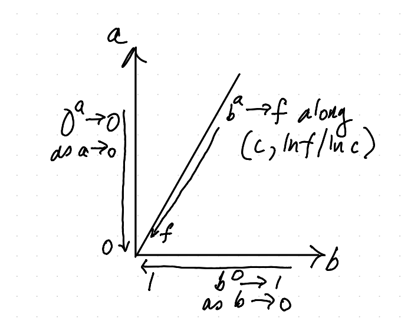

What is \(0^0\) - zero raised to the power of zero?
This post arose out of a question someone at Atlassian asked on an internal forum. It isn’t about software, not even in some vaguely allegorical sense. It’s maths – a bit of arithmetic, some set theory, and a bit of real analysis at the end. It’s about zero to the power of zero.
Why is this even a question?
What’s the first version of powers, \(b^a\), that you get taught? You’re usually taught that \(b^a\) is the product of \(a\) copies of \(b\), that is,
\[ b^a = b \times b \times\, ... \times b \]with \(a\) repetitions of \(b\) in the product.
From this definition, you might think that \(0^a\) should be \(0\) – because \(0\) times anything is \(0\). But that doesn’t work if \(a\) is \(0\) – what would zero copies of \(b\) be? There’s no actual \(0\) there to get times’d by anything.
After the definition, you start to find out about rules like
\[ b^{(a+c)} = b^a \times b^c \]which are usually motivated by saying “If you put \(a+c\) \(b\)’s in a row and times them, it’s just like timesing \(a\) of them, then timesing \(c\) of them, then timesing those together”. This follows from the associativity of multiplication – it doesn’t matter which order you collect the terms in. It also means you can think about
\[ b^a = b^{(a+0)} = b^a \times b^0 \]At this point, it’s really tempting to cancel the \(b^a\) from both sides to see \(b^0 = 1\). Indeed, this almost always works, it only doesn’t work if \(b^a = 0\), because you can’t divide by \(0\). Since we don’t know \(b^0\) isn’t \(0\), we can’t do this. However, it makes us feel \(b^0 = 1\) most of the time, and so maybe \(0^0 = 1\). In fact, we can see from the above that
\[ 0^0 = 0^0 \times 0^0 \]Now if \(x = x \times x\), then either \(x\) is either \(0\) or \(1\). You can see this because for such \(x\),
\[ x \times (x-1) = x \times x \mathbin{-} x = 0 \]and the only way two things can multiply to zero is if one, or other, are zero, which means either \(x = 0\) or \(x \mathbin{-} 1 = 0\), and so \(x\) is \(0\) or \(1\). So if we give \(0^0\) a value, either \(0^0 = 0\), or \(0^0 = 1\).
People often say at this point “\(0^0\) is undefined” or “it’s a convention that \(0^0\) is \(1\)”. I don’t like either of these answers, because I think there is a good answer, and it isn’t a convention. The problem is that we have a poor definition of power – our definition based on multiplying copies of \(b\) doesn’t have a clear meaning for \(0\) copies.
What are numbers anyway?
Non-negative integers, or natural numbers, that is, the counting numbers \(0\), \(1\), \(2\), …, are an abstraction of “How many things are in a bunch of things?”. Given a bunch of things \(A\), how many ways can I choose something from the bunch? The answer is a if there are a things in the bunch \(A\).
You get \(\mathbin{+}\) by asking “How many ways can I choose something from bunch \(A\) or bunch \(B\,\)?” You first pick which bunch (\(A\) or \(B\)), then pick from that bunch. If \(A\) has \(a\) things, and \(B\) has \(b\) things, you get \(a+b\).
You get \(\times\) by asking “How many ways can I choose something from bunch \(A\) and bunch \(B\,\)?” You might remember there are \(a \times b\) ways of doing this – you can pick the first thing in \(A\) and any one of \(b\) \(B\)’s, or the second thing in \(A\) and one of \(b\) \(B\)’s, or …, or the \(a\)’th thing in \(A\) and any one of \(b\) \(B\)’s. This is \(b+b+...+b\) with \(a\) terms (remember or is \(\mathbin{+}\)), which is \(a \times b\).
Notice that zero just works here. If \(Z\) is a bunch of zero things, \(A+Z = A\) – picking from \(A\) or an empty bunch is just picking from \(A\), and so \(A \times Z = Z\) – for any pick from \(A\), there are no ways to pick the thing from \(Z\). Also, \(Z \times B = Z\) – there’s no way to pick anything from the \(Z\) to pair with any \(B\). There’s a subtle and important difference here – we didn’t need to worry about what “zero copies of something” means – our definition gives us an answer without appeal to “convention”.
How to you get powers?
Thinking of this as a counting question, the answer is “How many ways can I map from \(A\) into \(B\,\)?”. That is, how many functions are there from \(A\) to \(B\,\)? For each thing in \(A\), you need to pick the thing in \(B\) which that thing in \(A\) maps to. So you get \(b\) choices for the first thing in \(A\), and \(b\) choices for the second thing in \(A\), and …, and \(b\) choices for the last thing in \(A\). This is \(b \times b \times .. \times b\) with \(a\) terms (remember and is \(\times\)), which is \(b^a\). This definition is great, because it doesn’t care about zero. In this context zero would be an empty bunch of things, and this definition still works. We can define \(A^B\) to be “functions from \(B\) to \(A\)”, and it all works.
Except … what are the functions to or from the empty set? For this, you need to wonder what a function even is. This is a common theme in mathematics – answering a question requires finding a different way to ask the question, which in turn requires refining our definitions to handle the new cases.
We talked above about \(A \times B\) – things in it are pairs of (something
from \(A\), something from \(B\)). We can define a function as an unordered list
(a subset) of pairs from \(A \times B\) where every element of \(A\) appears
exactly once in the first spot of a pair. For the programmers, you can think of
it as a switch statement listing out for each thing in \(A\), what thing in
\(B\) to choose for the function value.
Now let’s think about zero, or our empty bunch \(Z\).
What’s a function from \(Z\) to \(B\,\)? It’s a subset of \(Z \times B\) – which is empty. There’s exactly one subset of the empty set – an empty set (every set is a subset of itself). It also needs to have exactly one entry for every thing in \(Z\) – that’s easy – there’s nothing in \(Z\) to check. So the empty list of things is the one and only function from \(Z\) to \(B\). So \(b^0 = 1\).
What about a function from \(A\) to \(Z\,\)? It’s a subset of \(A \times Z\) – and \(A \times Z\) is empty, so again, the empty subset is the only candidate. It also needs to have exactly one entry for every thing in \(A\), which can’t happen if \(A\) isn’t empty, because there’s nothing to pick. So if \(A\) isn’t empty, there’s no function from \(A\) to \(Z\). So \(0^a = 0\) provided \(a \not= 0\).
What about \(Z^Z\,\)? Functions from \(Z\) to \(Z\,\)? There’s exactly one, as per the first argument. So \(0^0 = 1\).
I really like this, because it makes totally clear why \(b^0 = 1\) is a more important rule than \(0^a = 0\). We come up with an abstraction (bunches of things) that allows a definition (functions between them) which works more generally (is oblivious to zero), and just crank the handle and see what it tells us. The asymmetry between \(b^0\) and \(0^a\) is split by the definition of function (needing an entry for everything in the source) being unsatisfiable if \(A\) is non empty and \(B\) is empty.
What about other real numbers?
When I blithely claimed \(0^0 = 1\), someone asked me
Is this one of those “it depends on the branch of mathematics you’re using?”
We know powers work for other things – like fractions, where \(a^{1\over 2} = \sqrt{a}\) is the square root of \(a\). It’s much harder to motivate the definition here. You can do things like
\[ a^{1\over 2} \times a^{1\over 2} = a^{{1\over 2} + {1\over 2}} = a^1 = a \]and so \(a^{1\over 2}\) better be a square root of \(a\). However, how do you figure out things like \(e\) (Euler’s \(e\)) to the power of \(\pi\,\)? It turns out there is a good definition that does everything you could want, and agrees with our basic version from the natural numbers, and it is
\[ b^a = e^{(a \times \mathrm{ln}\,b)} \]where \(e^x\) is the exponential function and \(\mathrm{ln}\,x\) is the natural logarithm. Those two links are to Wikipedia, which has pictures of those functions which might help in what follows if you don’t know those functions. You might also worry that it is circular to define \(b^a\) using \(e^x\), but the latter can be defined (specifically for \(e\)) using analysis and without needing to know \(b^a\) for arbitrary reals.
Hopefully you don’t need to know much about \(\mathrm{ln}\,x\) in what follows. It’s the number which makes \(e^{\mathrm{ln}\,x} = x\). The thing you do need to know is that \(\mathrm{ln}\,0\) is undefined. For small positive \(x\), it turns out \(\mathrm{ln}\,x\) is a very negative number, and it tends to negative infinity very fast as \(x\) tends to \(0\).
So this definition can’t tell you \(0^a\) – because you’d need to know \(\mathrm{ln}\,0\). It does tell you that
\[ b^0 = e^{0 \times \mathrm{ln}\,b} = e^0 = 1 \]provided that \(b\) is not zero. Even if \(b\) is really small. Tiny. So if you creep up on \(0^0\) from the direction of \(b^0\) as \(b\) gets really really small, you get \(1\).
However, if \(a\) isn’t zero, then \(0^a = 0\). It’s not just we really want this to be true for most numbers. You can think about creeping up on \(b^a\) for a fixed positive \(a\) as \(b\) gets tiny. If \(b\) is tiny, \(\mathrm{ln}\,b\) is hugely negative. So \(a \times \mathrm{ln}\,b\) is also huge and negative. And it turns out \(e^x\) for a huge negative \(x\) is tiny and positive. So in the limit, we find that \(0^a = 0\) – at least for positive \(a\).
So now let’s creep up on \(0^0\) from another direction – from the direction of \(0^a\) as \(a\) is positive but smaller and smaller. You always get \(0\) – since \(0^a = 0\) for such \(a\). So from this direction, you get \(0\).
Pick your favourite positive real number – I’ll call it \(f\), because I don’t know what you’re going to say. But I want you to creep up on \(0^0\) along \(c^{(\mathrm{ln}\,f)/(\mathrm{ln}\,c)}\) for positive \(c\) as \(c\) gets smaller and smaller. Why? Because
\[ c^{(\mathrm{ln}\,f)/(\mathrm{ln}\,c)} = e^{((\mathrm{ln}\,f)/(\mathrm{ln}\,c)) \times (\mathrm{ln}\,c)} = e^{\mathrm{ln}\,f} = f \]So from this direction, \(0^0\) looks like \(f\) – your favourite number, what ever it is. Here’s a picture which might help you visualize this path dependence:

So this is the sense in which \(0^0\) depends on the branch of maths you are using. Our best generalisation of \(b^a\) to real numbers is really weird near \(0\). Not is it just discontinuous – the value you get depends on how you approach it. It’s weirder – you can get any answer you want if you approach from the right direction.
So for the real numbers, there isn’t a good answer for \(0^0\).
Conclusion
So why say it’s \(1\,\)?
With no context, \(0^0 = 1\) is a good answer because, absent other information, we’re talking about natural numbers, and so we should answer in that context. In the context of natural numbers, which are related to bunches of things – aka finite sets – power has a definition for which \(0^0\) is very well defined, and the answer is \(1\).
With more context, say you want it for real numbers, things get weird. I don’t even recall what happens for complex numbers – but it’s at least as weird as for real numbers.